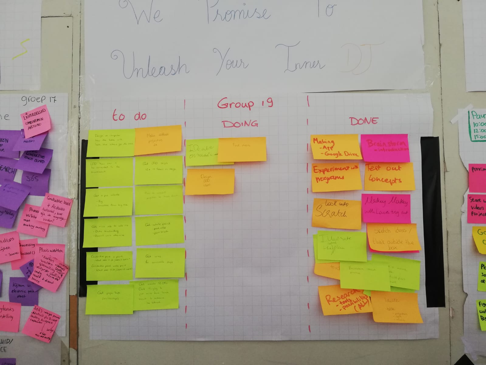
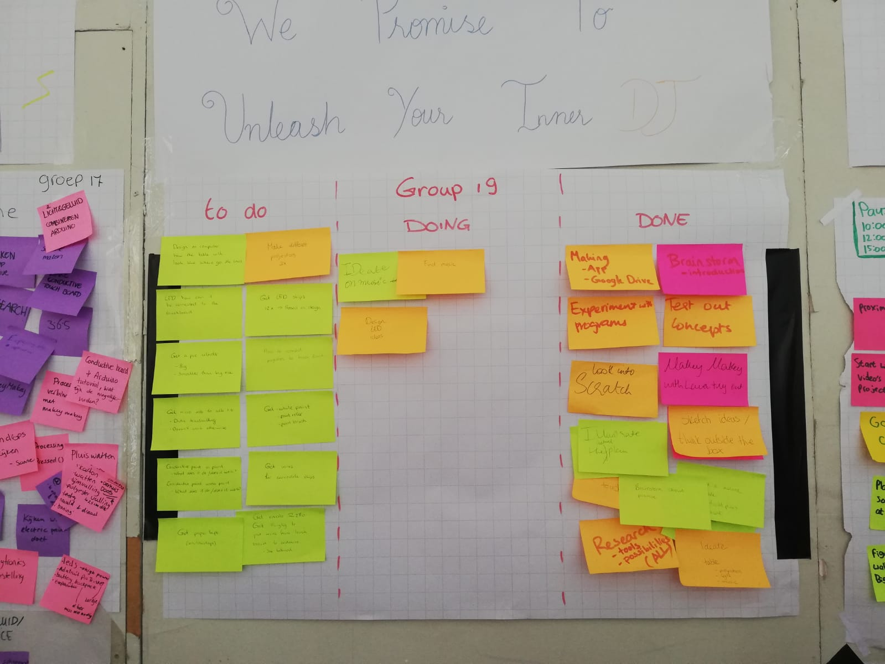
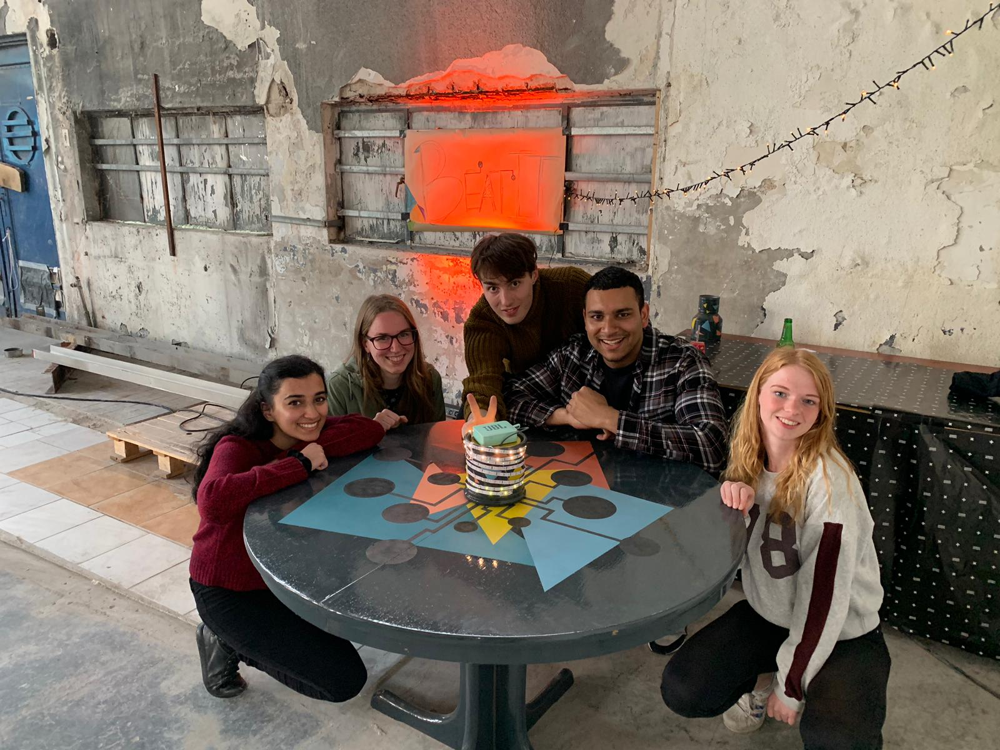

Lab Weeks
Proces
Tijdens de labweken wordt een product gemaakt in het onderwerp Playful Interaction. Bij het proces wordt er een van dag tot dag rapport geschreven van het groepswerk en mijn bijdrage hieraan. De vooruitgang en de tussenproducten worden beschreven. Er worden foto’s, video’s en tekeningen toegevoegd om het proces te illustreren. Dit product maak ik samen met Evi, Sunbel, Sandis en Roël.
Dag 1
Op de eerste dag kwamen we aan in de loods en hebben we een opstart praatje gekregen van de docenten. Mijn groepje stelde zich aan elkaar voor en we hebben als eerste een scrum bord gemaakt met wat we moeten doen, waar we mee bezig zijn en wat gedaan is. Daarna hebben we als groep vastgesteld wat we willen bereiken met dit project en welke richting we op zouden willen. Hierbij zijn we verder gegaan met het genereren van ideeën op het doel wat we wilden bereiken. Dit doel was het bijbrengen van de food waste op aarde. Hieruit kwam het idee om een spel te ontwikkelen, waarbij je het afval in het water moet opruimen. Om te kijken waarmee we dit konden realiseren hebben we verschillende technologieën geprobeerd en getest. De technologieën die we hebben geprobeerd waren de Makey Makey Go, LEAP, kinect en madMapping. Ik heb samen met Evi de Makey Makey uitgeprobeerd en een paar tutorials gedaan. Door een draad in een sinaasappel te steken en dan op de sinaasappel te tikken kon er worden geklikt op het scherm. Daarnaast hebben Evi en ik LEAP uitgeprobeerd en hier ook een paar tutorials mee gedaan. Je kan met de LEAP dingen oppakken op het scherm, zo was er ook een tutorial waarin je blokjes op een robot lichaam moest zetten. Doordat we na al deze testen van de technologieën beter wisten wat deze kunnen, zijn we terug gegaan naar het brainstormen en hebben we nieuwe ideeën gegenereerd. Dit hebben we met de hele groep gedaan. Hieruit kwamen nieuwe ideeën en gaan we verder met het idee don’t touch the lava, waarbij we de Makey Makey wilde gebruiken om op de vloer touchpoints te maken. Verder hadden we ook het idee om een variant op hole in the wall te doen met een kinect, waarbij een iemand een vorm aangeeft en de kinect dit registreert. De volgende persoon moet deze vorm nadoen. Als laatste hebben we op deze dag bekeken wat we de volgende dag wilden gaan doen. Dit hebben we toegevoegd op het scrumbord.
De eerste brainstorm sessie over wat we wilden gaan bereiken met het onderwerp. De foto is gemaakt door Roël van Klaveren.
Het eerste scrumbord. De foto is gemaakt door Evi van der Vorm.
Dag 2
Dag twee begon met de daily standup bij het scrumbord. Hier hebben we als groep gekeken wat we deze dag gaan doen en wat er nog moest gebeuren. Daarna zijn Evi en ik weer opnieuw gaan experimenteren met de Makey Makey. Nu hadden we een grotere versie van de Makey Makey Go. Hierop konden we meerdere touchpoints met aluminiumfolie op aansluiten en hebben we een spel op spele.nl gespeeld met de input van de Makey Makey. We hebben gekeken of we de touchpoints met aluminium konden vervangen door conductive paint. Met conductive paint kunnen we andere visuals maken dan met alleen aluminium folie. Midden op de dag hebben we een gastcollege gekregen van Vincent Lindeboom. Hij is van het bedrijf Next Empire. Na het gastcollege zijn we opnieuw gaan zoeken naar manieren om de conductive paint te gebruiken. Dit was een inspiratie rondje. Hieruit bleek dat de verf aan de Makey Makey vastgemaakt kan worden, maar ook aan een touchboard. De touchboard konden we niet gebruiken, dus dat staat op de planning voor de volgende dag. Als laatste hebben we met het hele groepje gebrainstormd over nieuwe ideeën en concepten met de Makey Makey en de conductive paint. Hieruit kwam een dj tafel, waar je als je de verf aanraakte een geluid of projectie te zien kreeg. Na dit idee hebben we gekeken wat we als geluid of projectie onder de aanrakingen wilde hebben. Als afsluiting hebben we gekeken bij het scrumbord wat we de volgende dag gaan doen en wat we gedaan hebben.
Test met conductive paint en de Makey Makey Go. De foto is gemaakt door Sandis Rainskis.
Het scrumbord van de tweede dag.
Dag 3
De dag begon met de daily stand up. Hier hebben we als team besproken wat we allemaal gaan doen en waar we mee bezig zijn. Daarna kregen we gelijk een guest lecture van Joost Broekens. Na de guest lecture zijn we tutorials gaan zoeken voor de touchboard en hebben we een experiment gedaan met de verf en het touch board. Het eerste experiment was met een draad met verf. Als je dan op de verf tikte of klikte dan start er een geluid. Als tweede experiment zijn er meerdere draden met aluminium uiteinde aan vast gemaakt. Zo konden er meerdere geluiden aangaan. Ze gaan niet tegelijkertijd, maar als je een touchpoint aanraakt dan gaat het geluid aan en als je dan een ander touchpoint aanraakt dan gaat het volgende geluid aan en de vorige uit. Het derde experiment was met het touch board en een proximity meter. Dit experiment ging de eerste keer niet goed, omdat we niet begrepen hoe we de proximity meter vast konden maken aan de touchboard. We hebben nieuwe tutorials gezocht om de proximity meter te kunnen gebruiken. Daarna hebben we een prototype gemaakt met het touch board en aluminiumfolie. We hebben een tafel oppervlakte gemaakt met de aluminiumfolie erop. Daar hebben we getest of potlood geleidt naar aluminium en aluminium aan aluminium. Hetzelfde materiaal geleidt wel goed als het uit twee delen bestaat en aan elkaar wordt gemaakt, maar potlood die aluminiumfolie aanraakt werkt niet. Hierna zijn we gaan brainstormen over het uiteindelijke concept. Het idee was om een tafel te maken, waar je vormen/verf aanraakt en dat maakt geluid. Om dit een geheel concept te laten worden, hebben we gebrainstormd over ideeën wat we wilde met de tafel. Hieruit kwam voor nu ook het idee om licht te projecteren op de muur als het geluid aangaat. Als laatste hebben we het scrumboard bijgewerkt en gekeken waar we morgen mee wilde beginnen.
Experiment met een oppervlakte van aluminium en meerdere touch points en het Touch Board. De foto is gemaakt door Roël van Klaveren.
Het scrumbord van de derde dag. De foto is gemaakt door Sunbel Sarfaraz.
Dag 4
Vandaag begonnen we met de daily standup bij het scrumbord. Hier hebben we bekeken wat we allemaal gaan doen vandaag. Na de daily standup kregen we een guest lecture van Teun Verkerk. Na dit guest lecture zijn we op zoek gegaan naar tafels en waar we deze konden halen. Via marktplaats konden we niet veel vinden, dus zijn we kringlopen gaan opzoeken. We zijn opgesplitst in een tweetal en drie eentallen, iedereen ging naar een andere kringloop. Uiteindelijk vonden we bij een van de kringlopen een goede ronde tafel en iedereen kwam daarheen. Terug in de loods zijn we een promise gaan bedenken voor ons concept. We hebben gezamenlijk alles opgeschreven wat we konden verzinnen en hebben er een uitgekozen. Deze hangt nu boven ons scrumbord. Na het bedenken van onze promise hebben we geschetst wat iedereen voor ogen zag met de tafel en hoe deze eruit zou moeten zien. Hieruit is een design gekozen. Ons eigen touch board kwam binnen en hebben deze uitgetest en hebben we een klein prototype gemaakt met aluminium folie. Er zijn door een groepslid muzieksamples uitgekozen en toegevoegd aan het touch board. Als laatste hebben Sunbel en ik het scrumbord bijgewerkt en gekeken wat we de volgende dag nodig zouden hebben en willen gaan doen. Het concept staat vast met het geluid en het design in schetsvorm. Verder moet er nog gekeken worden hoe we LED kunnen toevoegen aan de tafel. Deze LED’s moeten ook bij aanraking aangaan. De tafel is geregeld en wat we nodig hebben voor de tafel is opgeschreven.


De eerste schetsen van het design voor de tafel.
Het scrumbord van de vierde dag. De foto is gemaakt door Sunbel Sarfaraz.
Dag 5
De dag begon met de daily standup, hier hebben we met de groep besproken wat we gisteren hebben gedaan, wat we nog moeten doen en welke taken iedereen gaat doen vandaag. Na de daily standup kregen we onze laatste guest lecture. Deze lecture werd gegeven door Marcello Gomez Maureira en ging over playful interaction. Evi en ik zijn na het guest lecture onze tafel gaan schuren en Roel heeft verf gehaald. Sunbel en Sandis hebben gekeken of ze de LED werkend konden krijgen samen met het Touch Board. We hadden na het schuren niet gedacht aan kwasten en Evi en ik zijn kwasten en rollers gaan halen en zijn de tafel gaan schilderen. De tafel moest gaan drogen en Evi en ik zijn in de tussentijd designs gaan maken voor op de tafel. De designs zijn gebaseerd op een eerdere schets. Aan het einde van de dag is het scrumbord bijgewerkt en is er bedacht wat we de volgende week mee zouden kunnen nemen en wat we nog moeten doen. De tafel heeft de eerste laag en na het weekend kunnen de kleuren als tweede laag op de tafel worden geschilderd. Het design voor de touch points op de tafel zijn we mee bezig en na het weekend worden er nog een paar designs bij gemaakt.
 

De tafel die geschilderd is met de eerste laag.
Het scrumbord van de vijfde dag. De foto is gemaakt door Sunbel Sarfaraz.
De eerste designs voor op de tafel, die op de computer zijn gemaakt.
Dag 6
Dag zes is de start van de laatste week HCI Labweken. We begonnen met de daily stand up, waar we als groep hebben besproken wat we hebben gedaan, wat we nog moeten doen en zijn de taken verdeeld. Ik heb meer designs gemaakt voor de tafel, de designs heb ik ook gelijk op de schaal 1:100 gemaakt. Verder wisten we niet goed welke LED strips we nodig zouden hebben dus ben ik na de designs voor de tafel op zoek gegaan naar geschikte strips en heb ik gekeken welke wat kunnen. ‘s Ochtends is met de groep gestemd op het design en is er een design gekozen die uitgewerkt gaat worden. Dit is het design met de driehoeken en daar overheen de rondjes/touchpoints. Na de middagpauze hebben Evi en ik de eerste driehoeken op de tafel geschilderd. Terwijl de driehoeken drogen voor de tweede laag, hebben we ook mallen gemaakt voor de touch points. Na het maken van de mallen hebben we de tweede laag van de driehoeken geschilderd. De driehoeken moesten weer drogen en toen ben ik de blueprint gaan maken van de tafel. Ik had het design al op schaal gemaakt, dus heb ik de maten erbij gezet en van alle kleine onderdelen die in het design zitten. Nadat de blueprint af was, zijn Evi en ik de derde driehoek gaan schilderen. De eerste twee zijn vrij snel opgedroogd en we konden de derde er bovenop schilderen. Na een tijdje konden we de tweede laag van de driehoek ook schilderen. Als laatste hebben we gekeken als groep wat we morgen mee moeten nemen en wat er nog gedaan moet worden. Er is ook een lijst gemaakt met hoe en waar we ons product zouden willen neerzetten tijdens de expo.
De blueprint van de tafel.
Evi en ik die de eerste driehoeken schilderen op de tafel. De foto is gemaakt door Sunbel Sarfaraz.
Alle designs die op de computer zijn gemaakt voor de tafel.
Dag 7
De dag begon met de daily stand up. Hier hebben we als groep besproken wat we gisteren hebben gedaan, wat we nog moeten doen en zijn de taken verdeeld. Evi en ik gingen weer ons bezig houden met de tafel en het schilderen hiervan. Verder gingen Sunbel en Sandis verder met de LEDs en het Touch Board. Evi en ik hebben de vierde driehoek geschilderd en tijdens het drogen van deze driehoek hebben we de requirements en description voor ons product geschreven. Deze requirements houden in waar en in welke condities we ons product willen laten zien tijdens de expositie. De description is een uitleg van ons product, dit wordt bij ons product opgehangen tijdens de expositie. Na de requirements en description heb ik de driehoek een tweede en derde laag gegeven. De blueprint van de bovenkant van de tafel heb ik aangepast, omdat ik de maten verkeerd had opgeschreven. Daarna heb ik de lijnen voor het gedeelte van de conductive paint afgeplakt. Evi heeft ze geschilderd. Aan deze lijnen zijn rondjes verbonden. Voor deze rondjes hebben we al eerder mallen gemaakt. Deze mallen hebben we met tape vastgemaakt op de tafel en hebben Evi en ik ze geschilderd met de conductive paint.

De geschilderde PVC buis die de draden later netjes moet wegwerken. De foto is gemaakt door Sunbel Sarafaz.
De tafel met alle driehoeken erop geschilderd.


De tafel met de lijnen van conductive paint. Deze lijnen verbinden de rondjes met het Touch Board.
De tafel met de rondjes. Dit is het volledige design.
Dag 8
De dag begon met het verdelen van de taken en bekijken wat er nog gedaan moest worden. Daarna heb ik een gat geboord in de tafel en heeft Evi deze taak verder uitgevoerd. Ik ben in de tussentijd de wires gaan maken. We hadden alleen crocodile clips en hier moesten nog draden aan gemaakt worden. Deze draden heb ik daarna verbonden met de tafel. Dit kon door het uiteinde te plakken op de plekken waar conductive paint zit. De onbewerkte draden moeten de conductive paint aanraken en het hoefde zo alleen nog vast gezet te worden. We hebben de tafel getest en de conductive paint met de draden werkten. De rondjes met conductive paint waren een beetje dun geschilderd en de ondergrond kwam door de verf heen. Ik heb nieuwe sjablonen gemaakt. Deze zijn weer op de tafel bevestigt en ingeschilderd, door Evi en mij. Toen de verf iets opgedroogd was hebben we de tafel getest of die de verf zou pakken en het werkte nog steeds. Daarna hebben we de LEDs toegevoegd en getest. Deze LEDs zijn daarna vastgemaakt op de cilinder in het midden van de tafel en we hebben een deksel voor de cilinder gemaakt. Als laatste is alles samen getest.


De draden verbonden aan de crocodile clips.
Het vastmaken van de LEDs op de cilinder.
Dag 9
De dag begon met het testen van de tafel. Sommige rondjes bleken niet te werken, dus hebben we de rondjes doorgemeten. Ze kregen stroom er doorheen, dus ze zouden werken. De verf was uiteindelijk niet droog genoeg doordat de ruimte waarin we stonden vrij vochtig was. Met een föhn hebben we de rondjes geföhnd. Hierdoor werkten de rondjes weer naar behoren. Daarna zijn we onze plek netjes gaan maken en mooi gaan aankleden voor de expositie. We hebben sfeerlichtjes opgehangen en we hebben de tafel waar de laptop onder stond afgeplakt met papier. Zo konden de bezoekers niet de laptop gelijk zien staan. Ook hebben we een banner gemaakt, zodat je van verder weg kon zien dat onze tafel een expositie stuk was. Verder hebben we gevraagd of we andere groepjes konden helpen, maar dit was niet nodig. We hebben samen pizza gegeten en daarna begon de expositie. Tijdens de expositie zijn veel mensen langs gekomen. Ze vonden vooral het de tafel heel leuk om mee te spelen en uit te proberen. Verder kregen we ook veel complimenten over het design. De tafel nodigde uit om eraan te zitten en op de rondjes drukken. Als bezoekers dan geluiden hoorden, zag je dat ze steeds meer rondjes gingen uitproberen en door bleven spelen.
Product
Tijdens de labweken wordt een product gemaakt in het onderwerp Playful Interaction. Bij het product wordt beschreven wat het doet en hoe het gerelateerd is aan het onderwerp. Verder wordt er beschreven hoe het product werkt en hoe de interactie werkt. Dit wordt geïllustreerd door foto’s, video’s, blueprints etc.. Als laatste zal er een video gemaakt worden van het gehele proces en het product.
Beat it! - Beats by 19
We promise to unleash your inner DJ.
Het product wat ik samen met mijn groepje hebt gemaakt is Beat it!. Dit is een interactieve tafel, waar je zelf of samen muziek mee kan maken. De tafel valt onder het onderwerp playful interaction.
De tafel heeft op het oppervlakte grijze rondjes die aan lijnen naar het midden van de tafel leiden. Deze rondjes en lijnen zijn geschilderd met conductive paint, dat wil zeggen dat er stroom doorheen gaat als je er iets aan vast koppelt. In het midden zit een touch board die gekoppeld is aan de lijnen met conductive paint. Aan het touch board zitten ook LED strips gekoppeld die via een breadboard gekoppeld zijn.
De gebruiker interacteert met de tafel door de geschilderde rondjes aan te raken. Door deze rondjes aan te raken, gaan er LED lampjes aan en gaat er geluid aan. De geluiden die te horen zijn, zijn beatbox geluiden. Zo kan de gebruiker zelf muziek maken, bijna als een dj.
De input technologie die is toegepast zijn verschillende sensoren die werken op touch. De output technologie die de input technologie veroorzaakt zijn zicht en gehoor. Er wordt muziek afgespeeld en je ziet licht aan en uit gaan. De play modes van de interactie is single- en multiplayer. Bij de multiplayer gaat het om shared object, de tafel. De interactie is open-ended, de speler kan zo lang doorgaan als die zelf zou willen.

De blueprint van de tafel.
De binnenkant van de tafel, met alle draden en het Touch Board.
Final Video
Reflect
Nadat het product is gemaakt en de labweken voorbij zijn, zal ik reflecteren op deze weken en het gemaakt product.
Het product wat mijn groepje en ik hebben gemaakt, is de tafel waarmee je muziek kan maken. Tijdens het experimenteren met alle mogelijkheden en technologieën in de eerste week kwamen we er al snel achter dat we de conductive paint het interessantst vonden om mee te werken. Ik vond het interessant dat je verf kan verbinden met een Touch Board en zo van elk oppervlakte een interactieve omgeving kan maken. Ik ben tevreden met ons product, omdat we bijna alles wat we wilde verwerken in de tafel is gelukt. Het enige wat niet is gelukt zijn projecties toevoegen bij de beats. Dit wilde we doen door de projectie te activeren op geluid, maar in de ruimte was zoveel geluid dat dit niet handig was. Ook waren er tijdens de expositie veel mensen die de tafel een mooi design vonden hebben en muziek bleven maken met de tafel. Verder heeft de tafel een design wat makkelijk aangeeft waar je moet aanraken om geluid te maken. Soms werden de driehoeken ook geprobeerd, maar veel minder dan de rondjes die er wel voor bedoeld waren. De tafel maakt geluiden als je de conductive paint aanraakt en de LEDs die ook gekoppeld zijn aan het Touch Board gaan uit en aan als je de conductive paint aanraakt. Zo gaan ze mee met de geproduceerde beat.
Tijdens dit project begonnen we met zijn allen met het experimenteren met verschillende technologieën. De groep werd dan in tweeën of drieën gesplitst, zodat er meerdere technologieën tegelijkertijd konden worden getest. Ik heb hierbij met de Makey Makey, het Touch Board en de conductive paint geëxperimenteerd. Uiteindelijk hebben we samen besloten dat we met het Touch Board en de conductive paint verder wilden. Als groep hebben we besloten wat we wilden gaan maken en waarop. Dat werd uiteindelijk de tafel. Om de tafel te zoeken hebben we de groep weer opgesplitst en zijn we in groepjes van twee, twee en een naar verschillende kringlopen gegaan. Toen de tafel eenmaal in Maakhaven was is Roël zich bezig gaan houden met de muziek die onder de touchpoints moest komen, Sandis en Sunbel zijn zich bezig gaan houden met de code van het Touch board en ik heb me eerst bezig gehouden met het design en de blueprint van de tafel en daarna heb ik samen met Evi het design uitgevoerd. Als groep hebben we weer de tafel in elkaar gezet, alles gekoppeld en getest. Tijdens dit project heb ik dus evenveel gedaan als de rest van de groep en zijn de taken zo verdeeld dat iedereen een eigen gedeelte had. Soms hielpen we elkaar ook als er wat moeilijkheden waren.
Ik vond deze twee labweken in het begin heel zwaar, omdat je de tijden en werkwijze niet gewend bent. Later werd dit minder. Ook werd ik steeds gemotiveerder, omdat we later een concept idee kregen wat je dan ook echt gaat uitwerken. Aan het begin was het nog experimenteren en zoeken naar wat we eigenlijk wilden. Mijn verwachting van deze labweken zijn ook grotendeels uitgekomen. Je leert veel verschillende technologieën kennen en je kan hiermee vrij experimenteren. Verder vond ik het heel gaaf dat ik en mijn groepje iets gingen doen met conductive paint. Ik kende dit helemaal niet en zo hebben we toch iets heel leuks ermee gemaakt. Het concept is helemaal vrij om te bedenken en je hebt geen randvoorwaarden of iets waar je aan moet houden. Ook kan je met dit project je product uiteindelijk aanraken of gebruiken. Dat is een groot pluspunt, want daar kreeg ik meer motivatie van en wilde het ook zo goed mogelijk werkend krijgen. Ik heb veel geleerd over playful interaction, maar ook verschillende technologieën die bestaan en de andere topics met de uitgevoerde projecten. Ik vond deze twee weken een hele mooie ervaring.